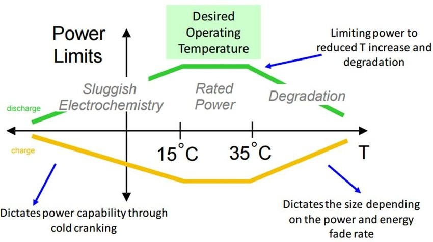
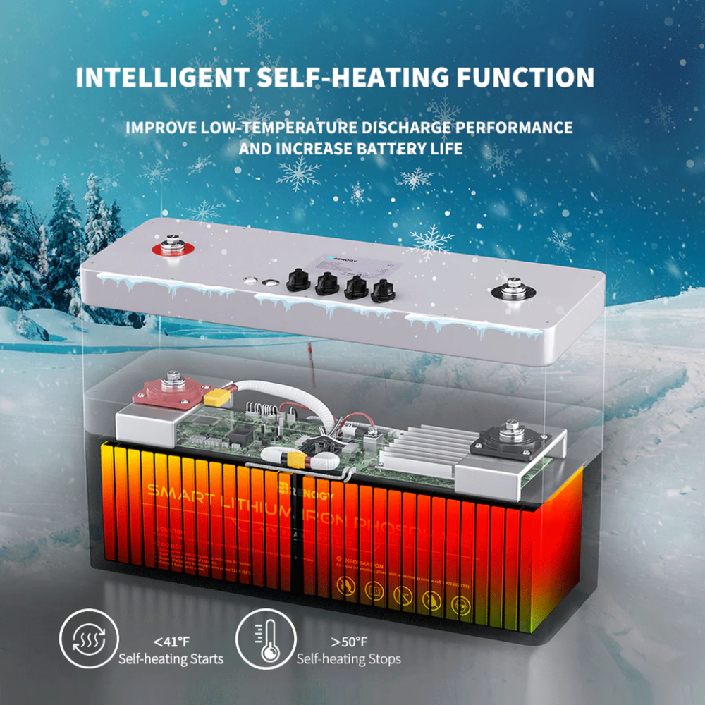
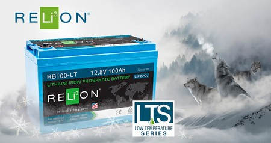
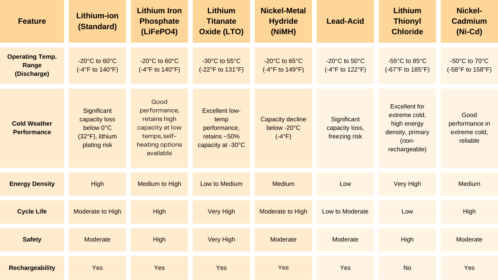
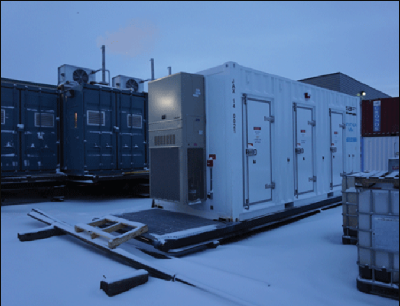
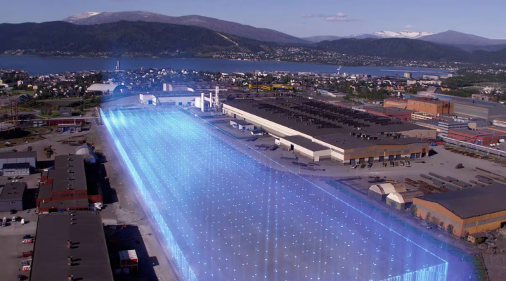

As the world increasingly turns to renewable energy sources, the Arctic region presents unique challenges for battery technology due to its extreme environmental conditions. With temperatures often plunging below -20°C and even reaching -50°C, traditional lithium-ion batteries face significant performance issues.
This newsletter explores the advancements and innovations aimed at overcoming these challenges, ensuring reliable energy storage in one of the harshest climates on Earth.
The Unique Environmental Challenges in the Arctic
- Freezing temperatures and battery performance: Batteries hate the cold. If you’ve ever had your phone die suddenly during winter, multiply that frustration by 1000 for Arctic conditions. Temperatures drop well below what normal batteries can handle, reducing their capacity and lifespan drastically.
- High humidity and condensation effects: It’s not just the cold. Humidity leads to condensation, which can cause corrosion or even short circuits. Imagine delicate electronics surrounded by microscopic water droplets — not a happy combo.
- Limited sunlight and solar charging constraints: Solar panels struggle with long periods of darkness during Arctic winters. Even when the sun does show up, it’s weak and short-lived. This makes storing and conserving energy even more critical.
How Cold Temperatures Affect Battery Chemistry
Batteries, particularly lithium-ion types, struggle in sub-zero temperatures. At temperatures below -20°C, these batteries can become nearly non-functional, leading to operational shifts to alternative power sources or requiring additional heating systems that increase complexity and cost. The internal resistance of lithium-ion cells increases significantly in cold weather, which reduces their capacity and charging efficiency.
Nickel-metal hydride (NiMH) batteries generally demonstrate better performance in cold weather compared to lead-acid batteries but are not as efficient as lithium-ion batteries, especially at very low temperatures. However, NiMH batteries also experience a significant decline in capacity when temperatures drop below approximately -20°C (-4°F). This reduction in performance is primarily attributed to electrochemical deterioration at the negative (MH) electrode.

Specialized Batteries for Arctic Conditions
To overcome the limitations of conventional battery chemistries in the Arctic, significant research and development efforts have focused on creating specialized batteries designed to withstand and perform reliably in extremely cold environments.
Lithium Iron Phosphate (LiFePO4) batteries have emerged as a promising option for cold-weather applications due to their improved performance compared to other lithium-ion chemistries and lead-acid batteries. These batteries can operate with minimal capacity loss, retaining around 95-98% of their rated capacity at temperatures below 32°F (0°C), which is significantly better than lead-acid batteries that typically provide only 70-80% under the same conditions.
Lithium Titanate Oxide (LTO) batteries represent another compelling alternative for extreme cold environments. These batteries are capable of operating in temperatures as low as -30°C (-22°F) with a very low risk of ignition or explosion, making them a safe choice for demanding applications. Even at such low temperatures, LTO batteries can retain around 50% of their charge and discharge capacity.

The integration of self-heating mechanisms into lithium batteries is a crucial innovation that directly addresses the challenge of low-temperature charging and ensures more reliable operation in Arctic conditions.
RELiON Battery LT Series, for instance, utilizes an internal heating system powered by the charger to warm the battery to a safe temperature before allowing charging to occur down to -20°C (-4°F). RENOGY The self-Heating series incorporates an automatic heating module within its Battery Management System (BMS) that activates when the cell temperature drops to 5°C (41°F) during charging.

VANVOLT batteries also feature integrated heating elements that ensure reliable performance down to -30°C (-22°F) , and Volts LiFePO4 Smart Self-Heating batteries are specifically designed with a self-heating feature for harsh winter conditions. Companies like Large Power specialize in manufacturing custom lithium-ion battery packs capable of discharging at -60°C (-76°F) and charging at -20°C (-4°F), further demonstrating the advancements in this area. The ability to self-heat is a significant step forward in expanding the usability of lithium batteries in the extreme cold of the Arctic.
Comparison Table of Battery Chemistries for Arctic Applications

Innovative Solutions for Energy Storage
To address the limitations of conventional batteries in Arctic conditions, several innovative solutions are being explored:
- Flow Batteries: These systems are gaining traction for long-duration energy storage. They offer advantages such as a variable power-to-energy ratio, minimal degradation over thousands of cycles, and self-heating capabilities that help maintain operational temperatures. Despite logistical challenges due to their size and complexity, flow batteries are becoming a key component in achieving 100% renewable energy penetration for remote Arctic mines.
- Advanced Lithium-ion Technologies: Research is ongoing to enhance lithium-ion batteries' performance in extreme environments. Innovations include improved cold-temperature performance through chemistry refinements and ruggedized designs that minimize short circuits and enhance thermal management. These advancements aim to enable lithium-ion batteries to operate effectively at temperatures as low as -60°C.
- Energy Storage Systems (ESS): Companies like Saft are deploying ESS solutions specifically designed for Arctic conditions. For instance, Saft's recent contract to provide a 6MW/7MWh lithium-ion system for Longyearbyen in Svalbard demonstrates the growing reliance on advanced battery technologies to ensure energy security in remote communities.

The Role of Renewable Energy Integration
The integration of renewable energy sources like wind and solar with energy storage solutions is crucial for sustainable operations in the Arctic. As remote mines target 100% renewable energy usage, the variability of these sources necessitates robust energy storage systems capable of providing power during fluctuations.
Projects like Freyr Energy Services Pvt Ltd Giga Arctic aim to promote local battery production powered entirely by renewable hydroelectricity, highlighting a commitment to sustainable energy solutions in challenging environments.

Furthermore, initiatives like the Energy Transitions Initiative Partnership Project (ETIPP) are focusing on solving integration issues between photovoltaic systems and battery energy storage in remote Alaskan communities like Galena, aiming to modernize their electrical grids and build resilience.
Future Outlook
The future of battery technology in the Arctic looks promising as researchers and companies continue to innovate. The development of more resilient batteries will not only support scientific research but also enable commercial ventures in mineral extraction and other industries operating in extreme conditions. As we push the boundaries of what is possible with energy storage, the Arctic may become a proving ground for next-generation battery technologies.
In conclusion, overcoming the environmental challenges posed by the Arctic is essential for harnessing renewable energy effectively. With ongoing advancements in battery technology and innovative solutions tailored for extreme conditions, we are moving closer to achieving reliable and sustainable energy storage in one of Earth's most unforgiving climates.